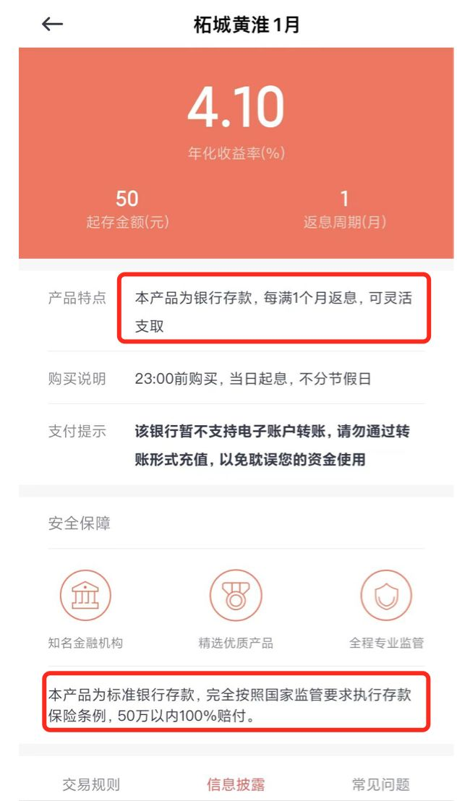

地方债务地雷
我们一直以来都在趟过地雷阵。接下来我们了解一下地雷阵隐患到底是什么。
地方债务问题
丰县2021年的财政收入为33亿元，但其地方债高达123亿元。2021年丰县的债务率为373%。其中，其近3年的城投债高达70亿元。
第七次人口普查数据显示，截至2020年11月1日零时，丰县常住人口为 93.52万人，10年间减少了2.8万余人。
男女比例上，丰县七普下来只有100.58，是徐州各区县里第三低的比值。但它最严重的还是老龄化，占比22.3%。
2021年，丰县实现GDP550亿元，2020年为486.5亿元，人均GDP仅为5.1万元，排在全市最后一位。
同年，丰县的财政收入为33亿，支出为82亿，地方政府的债务余额为123亿元。
通过债务率=地方政府债务余额/地方政府收入计算，2021年丰县的债务率为373%，2020年仅为73.4%。
钱从哪里来 - 城投债
丰县主要有4家平台公司，分别为：丰县城市投资发展集团有限公司、丰县经济开发区投资发展有限责任公司、丰县水务投资发展有限公司和丰县交通建设投资发展有限公司。
丰县的发债主体主要有3家，两家城投、1家银行，分比为：丰县城市投资发展集团有限公司（以下简称“丰县城投”）、丰县经济开发区投资发展有限责任公司（以下简称“丰县经开”）和江苏丰县农村商业银行股份有限公司（以下简称“丰县农商”）。
债务到期是否能偿付
债务率=地方政府债务余额/（一般公共预算收入+政府性基金收入）
这一数据反映了地方政府的偿债能力。而在国际上，通常会把风险警戒线定在80%-120%。财政部于2015年也提出，“拟将债务率不超过100%的水平作为我国地方政府债务的整体风险警戒线”。
如果简单计算一下丰县的负债率，可以发现已经达到了372%的惊人水准，几乎是风险警戒线的四倍。
债务不可怕，但是债务叠加老龄化就很可怕了。老龄化的未来就是死亡，死亡就意味着人死债务消。
丰县的老龄化程度为22.3%。
按世界卫生组织（WHO）的定义，一般来说，社会老龄化率按照65岁老年人占人口比率计算[16]：
- 老龄化社会：7 - 14%
- 老龄社会：14 - 20%
- 超老龄社会：20%以上
丰县以及丰县的经济显然是没有未来的。
债务不能偿付的案例
地方政府债置换算不算是政府违约？ - llj159941711的回答 - 知乎 https://www.zhihu.com/question/30954880/answer/522875690
本人在投资方面一直都比较谨慎，安全性不可靠的根本不考虑，没想到却在政府债这里栽了。。。我是2016年购买了这款《三都水族自治县城镇建设投资有限公司2016年直接债务融资》产品，产品的用途是用于三都水族自治县
农贸市场片区基础设施建设工程项目，但是，早已经到期一个月多了，别说是利息，就连本金我都没收回来，巨坑啊~官方连一个正式的说明都没有，这是要被割韭菜的节奏！！！当初之所以敢入手，也是因为看中是国企融资、国资担保，想着大企业不会耍阴招，但我错了，政府债TMD也开始坑投资人的血汗钱了？？？我投的项目募集资金规模还不到2亿元，想着仅是担保公司的注册资金都有30亿元呢。哎，现在我就想问：5.05亿的土地抵押哪去了？？？国有公司连我们这点钱难道都兑付不了吗？？？不是政府三函支持吗？？？人呢？出了这样的事情，三都县人民政府、财政局、人大常务委员会就视而不见吗？？？这么做，将政府信用置于何处？将我们百姓对国家的信任置于何地？？？一辈子的积蓄不能空凭你们随便的一纸通知，就打水漂了吧？？？这可是我们全家的血汗钱呐，无理由延期、展期，我们不接受！！！现在，事件中是否存在挪用项目资金？？？是否存在贪污受贿？？？？请领导们重视，望中纪委介入调查，尽快给我们一个合理的解决方案，不要让我们失去对政府的信任！！！ 


债务危机的后果
丰县城市投资发展集团有限公司（以下简称“丰县城投”）、丰县经济开发区投资发展有限责任公司（以下简称“丰县经开”）的债务到期不能偿还。
江苏丰县农村商业银行股份有限公司，和包商银行一样，在未来会破产。
丰县债务危机的苦果谁承担？当地买了商品房的居民承担、买了丰县城投债的投资人承担，国家承担一部分（全国纳税人承担）。
丰县的债务的钱从哪里来，1. 从银行借的 2. 从城投债的投资人借的
还不上怎么办？
桥水资本创始人达里奥先生有段时长30分钟的关于经济机器是如何运行的视频非常著名，也流传广泛。他在视频里提到，解决债务问题只有以下4种方法或者这4种方法的组合——
1 | |
还有一种不解决问题的临时方法借新还旧、拆东墙补西墙
债务膨胀的历史
自从尼克松1971年宣布美元脱离金本位之后，货币正式进入了信用本位，或者直白一些就是债务本位，所有的货币的背书都是债务，目前所有国家的货币基本上都是债务货币，因为实物本位货币早已破产。基础货币的信用背书是国债，其它的M2背书是信贷，所有的货币都是在债务背书下产生的。货币就是债务，债务和货币一体两面，同生同死。尽管大家都像喜欢天使一样喜欢货币，像讨厌魔鬼一样讨厌债务，但是殊不知没有债务也就没有了货币，没有了货币也就没有了债务。货币膨胀的历史必然是债务膨胀的历史，债务膨胀的历史也成就了货币膨胀的历史，两者如影随形。
通过前几篇文章的分析大家也可以知道，资本主义这种生产关系，必然是不均衡的，必然有人积累多余的利润，有人就积累债务，积累的利润等于积累的债务。在这里就基本上和货币对上了，货币的产生之初，同等数量的货币和同等数量的债务一起被创造出来，两者数量完全相同，因此本质不会存在债务危机，把那些货币还上债务就没有了债务。但是问题的关键在于这个分配，有人拿走了货币，有人获得了债务，拿到货币的人货币越积累越多，拿到债务的人债务越积累越多。等到债务积累人，无法偿还债务的时刻，债务危机就爆发了。
债务分国家债务和私人部门的债务，两者的上限都是各自的偿付能力，当收入无法偿还债务时，债务危机就将爆发。
此时就牵扯到一个每年货币发行数量的问题，也就是债务规模增加数量的问题。常规来说大家普遍认为货币发行数量应该超过GDP增速约2%-3%，货币发行要略微多于GDP产出增速，可以保证货币币值轻微发生通胀。不至于因为货币升值而发生货币窖藏现象，而略微超发的货币2%左右还可以通过银行的利息进行相应的抵消，既让货币进入了流通渠道，又保证了货币的币值稳定。
但是实际情况是货币发行的数量往往都会超过这个数量，因为政府总希望经济增速更快，老百姓高兴，他们有政绩，也有利益。这就是中国2000年以后货币常年超发的原因，平均超发率为6.5%。货币超发产生了两个后果，一个就是货币的贬值，因为货币发行数量大于GDP产出增速，因此货币必然发生贬值。在中国这个贬值主要体现在房地产领域，房价暴涨的本质就是货币贬值的体现。另外的一个现象就是债务的急速积累，政府、企业、居民部门债务急剧拉高远超了大家的收入增速，加上货币和债务的分配失衡问题，积累债务的部门越来越不堪重负了，很多企业尤其是国企早就进入了旁氏债务阶段，完全无力还债，甚至利息都无法偿还。这些债务都是当年刺激经济，制造大量低效率资产的产物。
中国的债务积累也大致分两个阶段，第一个阶段是政府、企业加债务，全民享受债务带来的货币增加，房地产暴涨，居民资产增值，且债务增加不多，因为这个阶段债务增加的主体都不是居民，所以居民部门属于一个搭便车的角色，很幸福，债务主要是政府和企业一直在承担，居民只需要付出一点房价的债务，然后就会获得几倍的收益，拉着猪尾巴升天了。但是政府和企业债务加不动之后，房地产价格就进入了萎靡不振的地步，大家回忆下13年到15年，政府操碎了心，房价抽鸦片一样愁云惨淡，原因何在，就在于地方政府和企业债务出现了危机，无法继续给大家创造货币了。于是到了2016年政府创造了棚改货币化安置，中央自己拿钱出来，拆五百万套房子，撒钱拉房价，改变大家预期，激发群众的贪心，于是这一轮房地产开始了，这一轮房地产最大的特色就是，政府和企业加债务能力几乎消失了，于是乎居民自己加债务，自己创造货币，自己拉房价，看看每个月的信贷数据大家就知道了，居民成了信贷的主力军。这时候政府和开发商成了搭便车的了，他们享受居民加债务创造出来的货币，居民成了中国经济发展的奠基石，壮哉大国风范。居民部门债务增加超过了储蓄增加，每工作一年，整个部门就更惨，一直惨到某天大家反应过来，预期改变然后就天黑请闭眼了。
在一个健康的经济内，债务本身就是一个清道夫，它会将那些无法偿还利息的单位清理掉，留下效率高的单位。让整个经济体一直处于优胜劣汰之中，但是在中国因为低效率的部门往往都是国企和地方政府，他们拉动经济也是政治任务，根本没有效率可言，只看当前的经济拉动，至于以后的还债问题，他们从来就没有思考过，因为毕竟当时他们拉经济的时候也不是他们自己做出的决定，他们因此就从来不觉得自己应该承担这个拉经济的后果。这些国有部门产生了大量的无法偿还的债务，就像机体的癌细胞一样，每年都吸收大量的新增贷款只为了借新还旧，成为了名副其实的僵尸企业，信贷资源给了他们却没有任何的产出，每年信贷规模继续扩张，信贷跟不上就直接倒地装死。这就是为何中国债务最近增加如此快的一个原因，不仅仅是中国经济因为低效率需要更多的资金进行拉动，同时因为以前拉动经济遗留下来的债务，都需要不停的信贷进行挽救。于是乎债务几何级数上升，且几乎没有还债的可能。当然最近三年某些高层想出来了一个棚改货币安置拉高房价，然后忽悠跟风群众接盘，进行债务转移的损办法。群众纷纷表示很欢迎，房价越炒越高，甚至政府害怕了，踩刹车都没用。出台了无数措施，最后连组织内部最高层次的法宝摇号大法都拿出来了，依旧不管用。居民部门债务迅速增加，整个中国经济目前基本上都靠房地产在支撑，所以政府这个假装踩刹车，大家彻底不相信了，政府又没有勇气真让房地产停摆，都到了这个时候还是在犹豫，还是在努力稳定房地产价格不快速上涨，这简直就是变相鼓励炒房。当然不炒房，还能干嘛呢？政府也想不出别的办法来。但是房地产泡沫越来越大，债务积累越来越多，加上人口老龄化，加上高企的房子空置率，加上外部的贸易摩擦，更不用说那个提不起来的股市，这都在把中国经济带入地狱么？政府面对现在的经济毫无办法？长效机制还是不敢出台？放任烂下去？
说一下这个空置率，这个词已经从媒体消失了很多年了，因为无法讨论，因为没有数据，因此空置率一直是个谜一样的东西。知道最近终于从官方报道了2017年空置率的数值，大中城市11.9%，三四线13.9%。据说标准已经很低，按照一年用电20度作为标准的。空置率已经如此之高了，这都还没有算最近几年销售出去的房子，16年往后销售出去的房子还没有统计，16年到18年起码还可以增加五千万套新房。到2020年起码再加3000万套，到了2020年空置率得接近20%了，这是要干嘛，真是完全的看不懂啊，房地产这个粪坑就那么不舍得爬出来么？
如今已经到了债务规模政府自己都害怕的地步了。此时有两种可能性，一种是所谓的通胀去债务，一种是紧缩去债务。这两种说法都有，然后下面分析一下这两种去债务的模式。
第一种是通胀去债务，听起来很有道理，放水不断的放水，然后放任通胀，一碗面一万块，货币超发百倍，大家的债务还起来就轻而易举了。但是这里边有个最简单的逻辑漏洞，货币超发百倍，大家的债务也要增加百倍，因为货币就是债务，债务就是货币，你以前的债务是还起来轻而易举了，那你新增的这一百倍的债务如何还？另外大家还要知道一个事情，即使货币超发了一百倍，你是能拿到这个超发的货币呢？还是拿到那个超发的债务呢？看看现实，货币超发了十几倍，大家的债务减少了么？还债容易了么？尤其是最近三年，居民部门债务几何级扩张，还债便容易了么？那以后如何增加货币呢？靠谁来负债呢？是居民还是国企，还是政府呢？如果还是靠居民来负债增加货币，你拿到的只有债务，货币都给了别人，你的还债会变得容易？除非国企和政府重新加杠杆，他们增加债务，创造货币，你老百姓运气好，能分到一点，大头还是特殊群体的，这个毫无疑问，你拿分到的那一点货币来还债。但是看看现实吧，现实是中国现在加杠杆的就是居民了，其它部门都开始降杠杆了，尤其是五月份新增贷款1.15万亿，居民部门增加6143亿，占比53%。社融为7608亿，社融规模低于信贷增加，意味着除了居民部门新增贷款6143亿，其它所有部分新增的债务为1465亿，其它部门已经开始还债了。居民部门一个人矗立在风中摇曳生姿，再看看众多的摇号抢房，真是荒诞啊。拿出一个部门往死里坑啊。
所以通胀去债务这个事情本身就是特别奇葩，用增加债务的方式去债务。你得到的只是更多的债务，这种方式根本是无法去债务的。这种方式继续下去的唯一途径就是债务破产，每个部门都债务达到上限，无法偿还债务，然后被动去杠杆，企业破产清算，银行被挤兑关门。那为何很多人都鼓吹通胀去杠杆呢？因为他们在通胀中，在货币超发中，他们是属于能拿到超发货币的人，不属于倒霉的创造货币的债务人。
现在说一下紧缩去债务。去债务必然是货币紧缩，因为没有了债务就没有了货币，货币数量必然减少这个是毫无疑问的。如果不紧缩就没办法去债务，只能进行所谓的债务转移，就像现在发生的，不停的把企业和地方政府的债务转移到居民身上，这只是转移，因为总体债务还是在增加的。当然政府只要自己的债务得到控制，别人的债务增加不增加他们好像也不怎么在意。至于以后百姓债务是不是还不起，债多了消费降低，实体萎缩的前景他们也貌似并不怎么上心，过一天算一天。因为经济增速只要必须保住，债务就必然增加，这个几乎是注定的。既然中央说了经济增速还是要保住6.5%，债务规模怎么可能下降，持平都不可能，只能继续扩张。或者简单看M2增速，只要M2是增加的，债务就是增加的，这就是货币的一体两面，货币增加，债务增加。因此中国就不存在主动降低债务总规模的可能。目前M2增速控制到8.3%很多企业就开始撑不住了，如果债务不增加M2增速为0，能想象那种情景么？企业就会像多米诺骨牌一样集体倒下。当然如果中国股市好的话，企业还可以在股市直接融资，不用通过银行发生这个信贷债务，但是看看中国的股市，一滩烂泥一样，再融资？看看最近的CDR全线宣传轰炸，号称融资3000亿，然后接盘已经在外国上市的众多bat王者归来，结果只融资到20%，尴尬到家了。中国股市已经事实无用了，在贸易战的打击下3000点以下指日可待。费半天劲弄出个注册制，临实施拉稀了，退市制度遥遥无期，这就是中国股市，永远动摇不了的特殊利益。
是不是抗拒紧缩去债务就能持续呢？债务继续加，目前就靠可怜的居民部门加债务维持这个债务经济的发展。居民部门还能加多少呢？再加三年加二十万亿？实体经济能扛到三年后么？消费萎缩已经快到了临界了，再萎缩下去，一旦实体经济崩盘，一切泡沫都会化为乌有，惨烈通缩被动去债务，例子可参考日本。
现在还在疯狂加杠杆幻想以后通胀会把债务自动消化的人，醒醒吧。
债务膨胀的未来

现在老龄化叠加债务危机，是过一天算一天罢了。我们一直以来都在趟过地雷阵，没炸只是幸运，并不代表一定会一直幸运下去。
北京、上海很多城市的人已经run出国了，而债务的代价是留在国内的全体人承担。
2022.5 地方银行暴雷
1
如何看待河南、安徽等地2900多储户在村镇银行将近12亿存款无法提现？ - 知乎
https://www.zhihu.com/question/531890843/answer/2505674125
很多人嘲笑这么不知名的银行为啥有人敢投！我应该是非常有代表性了！
今年真是太魔幻了。买的银行存款竟然能暴雷，你没看错是银行存款！我购买的是这家叫柘（zhe）城黄淮村镇银行。

除了这家还有其它6家同时暴雷。如下截图所示
内容截取自公众号保险法
案例解读
看到这肯定有人嘲笑，这么不知名的银行也敢投。
这大部分的“功劳”就要归功于第三方金融平台了：百度系的度小满、三六零系的你财富、小米系的天星金融等，它们的背后可是李彦宏、周鸿祎、雷军三大“楷模”， 互联网行业的佼佼者。由他们引流这事就成功了90%，在2019年~2021年，这几大主流的金融平台主打销售河南村镇银行等类似的存款产品，直到 2021年政府下发公告禁止此类产品在三方平台出售，它们才慢慢下架，但还是会有公告，弹窗提示之类的引流。大部分受害者都是在这个时间段入坑购买的。
比大部分人更魔幻的是，我恰好就职于（外包）其中的一个金融平台所属的公司。当时公司内部就在推这类金融产品，还专门建了微信群进行讲解。而我本人由于承受能力有限，从不理财和炒股，闲钱都是买些定期的存款，而公司推的产品非常符合我的预期，又是内部推荐，没有任何防备就入手了。
看到这肯定又有人说，智商有限呀，银行存款和理财难道分不清吗？带大家看看我买的这款产品。
看到重点了吧，除此之外还有银行卡号、红头文件、条款、协议等等，所有的手续和条款包括利率都符合银行存款标准。 就是说到如来佛祖那，这也是一款银行存款产品不是理财！公司内部推荐+主流平台加持+银行存款+50万内100%赔付+国家监管，怎么看也不会有丢到本金 的风险，最多不过是我提前取款会损失利息而已。可今年就是这么魔幻，这个银行存款在2022年4月18号暴雷了，距今已过去30多天，而我是5.25号才 发现。毕竟是银行存款嘛，我从没怀疑过什么，不到用的时候根本不会看，等我想用的时候，却无法提现。
看到这，肯定又有人说：活该呀，你贪人家的利息，人家偷你的本金。
那就说说这4.1的利息吧，现在看可能觉的有点高。但在19年左右定期5年、4.1的利息绝不算高。就算现在这利息也在银行存款正常的浮动范围内。所以，大部分人都不是奔着高额利息购买的否则随便买个基金也比这香。大部分人和我都一样，首先看中它是一款银行存款，50万内100%赔付，所以肯定没有风险；其次虽说是定期存款但相较五大行而言它依旧可以灵活支取，毕竟是刚需的钱，随时可能拿出来用；再其次才是那高出五大行0.3左右的利息，但也没有高多少吧。
再来看看当地政府对此事件的调查结果。

内容截取自公众号保险法案例解读
啥意思呢？简单来说就是一个合理，合法，合规且受监管的银行系统资金最终却流向了私人账户，如此严重的漏洞，却在ZF的监管下运行了很多年。真是可气又可笑。我该不该相信这调查结果呢？据不可靠消息说某监会想以假系统为由，将此事件定义为公司和个人从事的违法集资犯罪活动。好家伙，好好的储户变成了犯罪分子，搞不好还要送大家一对银手铐。总之，目前为止没有任何官通告，更别说100%赔偿了。
啥意思呢？简单来说就是一个合理，合法，合规且受监管的银行系统资金最终却流向了私人账户，如此严重的漏洞，却在ZF的监管下运行了很多年。真是可气又可笑。我该不该相信这调查结果呢？据不可靠消息说某监会想以假系统为由，将此事件定义为公司和个人从事的违法集资犯罪活动。好家伙，好好的储户变成了犯罪分子，搞不好还要送大家一对银手铐。就算是个假系统，这也是银行和外部之间的问题，和储户有毛关系，储户没有任何问题，也没有被骗，被骗的是银行而已。储户只是把钱存在银行而已，有什么错吗？总之，目前为止没有任何官方通告，更别说100%赔偿了。
据说，更为荒谬的是，疫情没有实现动态清零，存款倒是实现了清零。因为防疫措施
都用在了去当地上访维权的普通用户身上（这 里不敢直说，去某乎搜）。别管什么原因，只要去了就送隔离14天+红码大礼包，搞不好额外再送一对银手镯。你会发现，荷兰政府别的事情不咋滴，对付维权群 众方面特别的老辣干练，毕竟是一个年年出事的大省，实战经验十足。再来说一下我一共投了多少钱呢——6万，不算多。就算打水漂我也认了，但让人心寒的是， 上面的各种手段。网上有很多关于此案的信息尤其是在外网，看过后简直是令人发指。出了事，永远都是各种手段镇压，各种创造名词甩锅。能把最普通的银行存款用户逼到举牌子取款要钱，地方ZF的公信力还有吗？热搜上了多少次就被压下来多少次，相信还有很多人依旧被蒙在鼓里。其中有很多都是当地最最普通的百姓，他们相信“银行”这个国字招牌，把血汗钱存了进去却不曾想到或者还不知道，竟然取不出来了。
但， 时至今日，我依旧相信中央ZF会给储户们一个满意的交代。因为此次事件并不是简单的暴雷，处理不好，影响的不仅仅是这几十万的苦主，说会动摇国家的金融体 系也不为过。让那些大大小小的民营银行、商业银行以后如何运营，让“银行”这个招牌如何立足。总不能一出事就说假系统，没出事的就是真银行。
大家以此为鉴吧！
1、除了河南村镇系列银行外，还有很多类似的民营银行，而且都是同期出来的我就不一一点名了，卖的存款产品几乎一样。今天河南银行能暴雷，明天山东、东北三省、后天浙江沪银行就都能暴。强烈建议，当下yq非常时期，抓紧取出来吧。银行存款、100%赔付、国家监管，都是扯淡。真假系统都分不清还能指望怎么监管呢？
2、卸载三方金融平台！如有需要直接去理财产品官方购买，千万别通过这些三方平台，赤裸裸的吸血鬼，比那些暴雷的产品更无耻。对用户而言没有任何好处，一旦出问题，立马甩锅，反而多了一层扯皮方，问题更加复杂化。
最后，再说一句 送给那些嘲笑我们的人。你可不共情，但也请别冷漠。你以为这些事和你无关，再这么乱下去，再这么黑暗下去，迟早轮到所有的人。
2 河南、辽宁一共上百家银行 涉案金额超400亿
搞笑…..区区12亿能搞崩溃6家银行？
河南许昌农商行下面三家，加一个新东方银行。
另加安徽两家。
如果从实际表现来看，这轮设计的坏账应该是超过了存款保险的总额。存款保险之前一共也不到一千亿，然后包商银行传闻吃掉了接近一半的存款保险…..
那么从目前银保监会装死，河南省政府装死，中国人民银行装死来看，整个窟窿应该是在400亿以上的。
否则无法解释为什么一个省的人行，省政府，省银保监会，会因为区区12亿沉默。
当然具体超过了400亿多少，这个不清楚，很有可能400亿只是冰山一角。
因为这个事情央行已经知道了，也发了文章说他关注了这个事情。但是这么久了，什么事情都没有好转。说明央妈看到这个情况也被吓到了，且央妈也没有能力去改变什么……
如果一个窟窿已经达到央行都无法处理了，那么说明要不然是央行没钱中国要完蛋了，要不然就是地方政府太能玩了，央行不想管了，准备清算了。从逻辑上来，央行是不可能完蛋的。核威慑
不仅可以对外，也可以对内。
联想到河南庞大但是凄惨的房地产市场，央妈可能是要清算掉这些银行。只是给了一个银行自救的机会。
目前银行的做法包括粉饰太平，周年庆之类的，只是徒劳的拖时间，因为在存款主要来自互联网的情况下，线下吸储重新恢复真正合规的拨付率
是不可能的。现在只要恢复线上业务，这些村镇行一分钱外地存款都不会剩下…..
现在这些村镇行处于一个非常尴尬的位置。恢复业务，会马上死亡，不恢复业务，又会影响全国1600多家村镇行的集体信用。
那么你是银行负责人你会怎么选？
必然是继续拖延。因为老百姓总要有存款需求，其他行挤兑总会又个限度，等个半年之后，我在放开线上业务，那时候我都不是这个银行负责人了…….
至于说什么深远影响。永煤虽然抬高了全市场的利率。但是随着时间的流逝，情绪总会消退，只不过短期内河南的村镇行
狗都不碰

还是正反两个方向推断。
第一，假设辽宁是重灾区，但是起码那里银保监会还敢处理，河南这里政府已经摆烂了。那么河南算什么。
第二，假设河南比辽宁问题小，那么这种情况下河南竟然还摆烂，那么我觉得反映出来的问题就更大了。
反正，两个省相互借鉴看吧。河南村镇银行是许昌农商行（村镇行上级）的领导被通缉后才爆雷的。东北这里的小银行大家自己看着办吧……
2022/5/19更新
金 额这个400亿是我估算的。之前包商银行翻车前，2018的时候，存款保险是821.2亿，包商银行死的时候总额不到1000亿，传闻包商银行吃了一半的 保险（消息比较准，毕竟你也可以用包商银行的数据自己推算，大差不差）。那么我们往小了在估算点，1000/2在美化一下估算的是400亿。
但是我没想到我估算的小了。。。
目前三方平台比如百度京东等平台合计导流是超过了300亿。其中240亿导歪了。（难民群消息，我自己在禹州新民生有10万）
这还不算小程序，APP，网银，新财富
，银行柜台等数据。所以400亿是肯定打不住的（小程序的人很多）。
目 前之前报警的朋友已经收到维稳电话了，这个事情定义为了非吸。经历过P2P的朋友都知道，定了诈骗，那是重罪，按照当前最少240亿的金额，无期徒刑了， 且由于是重罪，钱多少能追回来一些的。但是如果是定了非吸，那是很轻的罪行，而且这么多p2p，有几个定了非吸后你能拿到钱的？
如果根据法律法规的规定确实是银行、百度京东国金所羚羊财富等需要集体承担我们的损失。法条链接如下：
中国银行业监督管理委员会
令【2006年第 5 号】第八十九条 金融机构在提供电子银行服务时，因电子银行系统存在安全隐患、金融机构内部违规操作和其他非客户原因等造成损失的，金融机构应当承担相应责任。因客户有意泄漏交易密码，或者未按照服务协议尽到应尽的安全防范与保密义务造成损失的，金融机构可以根据服务协议的约定免于承担相应责任，但法律法规另有规定的除外。
但 是问题是政府已经没钱了。整个河南都快穷的当裤子了，你就是去xx或者举着红旗去xx一样没用啊。一两年钱建业集团因为50亿暴雷的时候我就应该意识到这 点，但是我没想到我们的银行系统这么脆弱。内控治理这么弱小。也算是涨了见识，沪市上市公司每年还有一次内控审计报告呢。银行竟然没有。。。银保监会的监管可真的够用心的
总之一句话概括：
这次损失大的自谋出路，损失小的就当给我们河南政府捐钱买XX了。
然后在劝一段话：
我本人经历过团贷网（东莞）、短融网
（北 京）、蜜蜂有钱（深圳福田）多次灾难，每次也都有尝试。但是结果就是没有结果。团贷网爆发的时候，我人在澳大利亚都能收到东莞警方的维稳短信。在行政面前 不要谈什么法律证据，说实在的你也拿不出什么证据。你的证据都会被认定你是伪造的。或者是计算口径不对。想要继续去冲，去努力的，请随意，但是真的没用， 除了给你留个案底。放下包袱，继续生活，人活着才有希望，如果真的在上访的时候脑子一热，那才是真的什么都没了。
最后是一段感慨：
我 经历了整个金融创新阶段，我看着他从草莽，走向了业务模式的成熟，也看到了国家对于其业务漏洞的修补，但是最终无济于事。我一直在想，为什么澳洲p2p能 活，日本p2p能活唯独我们活不了？后来在澳洲从事了一段时间的换汇公司打杂，我才明白了。这是基础建设的问题。澳洲的p2p金额很大，而且主要是抵押为 主。分一押二押。这里他们的抵押登记非常简单。但是合法有效。而国内相关p2p领域先是被强行要求拆解成了小额分散，小额分散必然没什么抵押可言。小额分 散后有要求引入托管银行等。这不就成了基金的模式了吗？绕来绕去所谓的金融创新最后都会被整合到原有的旧体系中。
但是今天，这个旧体系也崩塌了。我用了10万见证了1600家村镇行的信用崩塌。
也许某位资本家关于中国金融系统的评价，或许真的是对的，或许真的是因为他看到了什么。
2022/5/19补充：
我仔细的想了想了还是建议大家正常的保持投诉压力就行，去现场的注意防疫政策。关于网上的非吸的认定，包括群里的240亿第三方存款不入账的说法，目前都不是官方的信息。
这里面最假的就是这个非吸的认定。因为本次事件中没有一个非法吸收存款的主体。总不能说银行是非法吸收存款的主体吧。。。至于新财富等犯罪主体，他的责任认定也不会是非吸，对于线下贴息这部分最少是诈骗。对于线上操作银行的这部分是侵占银行资产。
无论怎么样都不应该是非吸。
希望大家保持理智，不要和我一样情绪上头。
好好或者才能有未来！！！
5-23紧急更新‼️
不要去现场，已经镇压了！
钱没了可以再赚，命没了什么都没了！
人生漫漫百年，何必争着一时得失？
活下去就都有希望，千万不能走极端啊！
5-24更新。
今天是因为有个新闻，河南要开始做到48小时全民核酸了，目前无论采用什么计算方法，河南政府都是没有这个财力的。
要不然河南各级官员等着停发工资，要不然他们就要想办法。
君子不立危墙之下，在河南各级银行有钱的，尽快走吧……